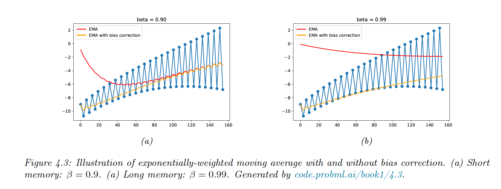

4.4.1 The methods of moment (MOM)
MOM is a simpler approach than computing MLE. Solve K K K K K K
The theoretical moments are given by μ k = E [ Y k ] \mu_k=\mathbb{E}[Y^k] μ k = E [ Y k ] The empirical moments are given by μ ^ k = 1 N ∑ n y n k \hat{\mu}_k=\frac{1}{N}\sum_ny_n^k μ ^ k = N 1 ∑ n y n k We solve μ k = μ ^ k \mu_k=\hat{\mu}_k μ k = μ ^ k
Example with the univariate Gaussian:
μ 1 = μ = y ˉ \mu_1=\mu=\bar{y} μ 1 = μ = y ˉ
μ 2 = σ 2 + μ 2 = s 2 \mu_2=\sigma^2+\mu^2=s^2 μ 2 = σ 2 + μ 2 = s 2 σ 2 = s 2 − μ 2 \sigma^2=s^2-\mu^2 σ 2 = s 2 − μ 2
so:
μ ^ = y ˉ \hat{\mu}=\bar{y} μ ^ = y ˉ
σ ^ 2 = s 2 − y ˉ 2 \hat{\sigma}^2=s^2-\bar{y}^2 σ ^ 2 = s 2 − y ˉ 2
So in this case, this is similar to MLE.
Example with the uniform distribution:
p ( y ∣ θ ) = 1 θ 2 − θ 1 I ( θ 1 ≤ y ≤ θ 2 ) p(y|\theta)=\frac{1}{\theta_2-\theta_1} \mathbb{I}(\theta_1\leq y\leq\theta_2) p ( y ∣ θ ) = θ 2 − θ 1 1 I ( θ 1 ≤ y ≤ θ 2 ) μ 1 = E [ Y ] = θ 1 + θ 2 2 \mu_1=\mathbb{E}[Y]=\frac{\theta_1+\theta_2}{2} μ 1 = E [ Y ] = 2 θ 1 + θ 2
μ 2 = E [ Y 2 ] = θ 1 2 + θ 2 θ 1 + θ 1 2 3 \mu_2=\mathbb{E}[Y^2]=\frac{\theta_1^2+\theta_2\theta_1+\theta_1^2}{3} μ 2 = E [ Y 2 ] = 3 θ 1 2 + θ 2 θ 1 + θ 1 2
Inverting these equations to get θ 1 \theta_1 θ 1 θ 2 \theta_2 θ 2
To compute the MLE, we sort the data values. The likelihood is:
p ( D ∣ θ 1 , θ 1 ) = ( 1 θ 2 − θ 1 ) N I ( θ 1 ≤ y 1 ) I ( y N ≤ θ 2 ) p(\mathcal{D}|\theta_1, \theta_1)=(\frac{1}{\theta_2-\theta_1})^N \mathbb{I}(\theta_1\leq y_1)\mathbb{I}(y_N\leq\theta_2) p ( D ∣ θ 1 , θ 1 ) = ( θ 2 − θ 1 1 ) N I ( θ 1 ≤ y 1 ) I ( y N ≤ θ 2 ) Then, if we set θ = θ 2 − θ 1 \theta=\theta_2-\theta_1 θ = θ 2 − θ 1
d d θ N L L ( θ ) = N θ 2 − θ 1 \frac{d}{d\theta} \mathrm{NLL}(\theta)=\frac{N}{\theta_2-\theta_1} d θ d NLL ( θ ) = θ 2 − θ 1 N This is minimized by θ ^ 1 = y 1 \hat{\theta}_1=y_1 θ ^ 1 = y 1 θ ^ 2 = y N \hat{\theta}_2=y_N θ ^ 2 = y N
4.4.2 Online (recursive) estimation
When data arrives sequentially we perform online learning.
Let θ ^ t − 1 \hat{\theta}_{t-1} θ ^ t − 1 D 1 : t − 1 \mathcal{D}_{1:t-1} D 1 : t − 1
θ ^ t = f ( θ ^ t − 1 , f t ) \hat{\theta}_t=f(\hat{\theta}_{t-1},f_t) θ ^ t = f ( θ ^ t − 1 , f t ) Example for the mean of Gaussian:
μ ^ t = ∑ n = 1 t y n = 1 t ( ( t − 1 ) μ ^ t − 1 + y t ) = μ ^ t − 1 + 1 t ( y t − μ ^ t − 1 ) \hat{\mu}_t=\sum_{n=1}^t y_n=\frac{1}{t}\Big((t-1)\hat{\mu}_{t-1}+y_t\Big)=\hat{\mu}_{t-1}+\frac{1}{t}(y_t-\hat{\mu}_{t-1}) μ ^ t = n = 1 ∑ t y n = t 1 ( ( t − 1 ) μ ^ t − 1 + y t ) = μ ^ t − 1 + t 1 ( y t − μ ^ t − 1 ) This is a moving average, the size of the correction diminish over time. However if the distribution is changing, we might want to give more weight to recent data points.
This is solved by exponentially-weighted moving average (EWMA)
μ ^ t = β μ ^ t — 1 + ( 1 − β ) y t \hat{\mu}_t=\beta \hat{\mu}_{t—1}+(1-\beta)y_t μ ^ t = β μ ^ t —1 + ( 1 − β ) y t with 0 < β < 1 0<\beta<1 0 < β < 1
The contribution of a data point in k steps is β k ( 1 − β ) \beta^k(1-\beta) β k ( 1 − β )
Since the initial estimate starts from μ ^ 0 = 0 \hat{\mu}_0=0 μ ^ 0 = 0
μ ~ t = μ ^ t 1 − β t \tilde{\mu}_t=\frac{\hat{\mu}_t}{1-\beta^t} μ ~ t = 1 − β t μ ^ t 
{kind=link}